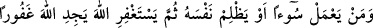
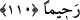

girmeleri emredilir. Onlar cennete yaklaşıp da onun kokusunu aldıklarında,
saraylarına ve Allah’ın cennet ehli için hazırladığı şeylere baktıklarında “Onları
oradan çevirin, onların oradan nasipleri yoktur.” diye nida olunur. Onlar evvelkilerin
ve sonrakilerin dönmediği bir üzüntü ve pişmanlıkla oradan dönerler ve şöyle derler:
“Ey Rabbimiz! Keşke bizi cehenneme dostların için hazırladığın mükâfâtı
göstermeden koysaydın.” Allah Teâlâ şöyle cevap verir:
“Ben bunu size kasten yaptım. Siz benimle başbaşa kaldığınızda büyük günahlar
işleyerek bana karşı koydunuz, insanlarla karşılaştığınızda bunları gizlediniz.
İnsanlara kalplerinizde gizlediğinizin aksiyle göründünüz. İnsanlardan korktunuz da
Ben’den korkmadınız. İnsanları yücelttiniz de Zâtımı yüceltmediniz. İnsanlar için
bâzı şeyleri terkettiniz de Benim için terketmediniz. Bu gün sizi sevaplardan mahrum
bırakacağım ve elem verici azâbımı tattıracağım.”[141]
Nitekim Allah Teâlâ şöyle buyurmaktadır: “Allah’ı (gûyâ) aldatmaya çalışırlar.
Oysa O onları aldatır.” (Nisâ, 4/142) Bu kısım, “Tenbihü’l-gâfilîn”den alınmıştır.
Bunu bildiysen Allah’tan gizlemeyenlerden olmamak için çalış. Hıyânetini emanete,
günahını taate, zulmünü adâlete, yalancılığını tam doğruluğa çevir. Allah’tan
bağışlanmanı dile. Çünkü istiğfar, günahların ilacıdır. Çok bağışlayıcı Melik olan
Allah’a giden melekût kapısı onunla açılır.
110- Kim bir kötülük yapar yâhut nefsine zulmeder de sonra Allah’tan mağfiret
dilerse, Allah’ı çok bağışlayıcı ve esirgeyici bulacaktır.
“Kim bir kötülük yapar” Tu’me’nin Katâde ve yahûdîye yaptığı gibi kötülüğü
başkasına ulaşan ve kendisini rezil eden çirkin ve mütecâviz bir amel işler “yâhut”
yine Tu’me gibi yalan yere yemin ederek “nefsine zulmeder de sonra Allah’tan” sâdık
bir tevbe ile “mağfiret dilerse” Burada tevbe şart kılınmıştır. Çünkü istiğfarla birlikte
“Tevbe ettim, kötülük işledim, ona asla dönmeyeceğim, yâ Rabbi beni bağışla!”
demedikçe ittifakla tevbe edilmiş olmaz. Bu bilgi, “Haddâdî Tefsîri”nden alınmıştır.
Kötülüğün şirk ve zulümden aşağı olduğu söylenmiştir. Çünkü şirk büyük bir
zulümdür. Bu iki günahtan birinin küçük diğerinin büyük günah olduğu da söylenmiştir.
“Allah’ı” ne olursa olsun “çok bağışlayıcı ve” kendisine çok ihsanda bulunur şekilde
“esirgeyici bulur.” Tevbe edenin mağfiret ve rahmetin eserlerini müşâhede etmesi de
ayrı bir nimet olduğu için burada Tu’me ve kavmini tevbe ve istiğfara ziyâdesiyle teşvik
vardır.
Hz. Ali (r.a.)’dan rivâyet edildiğine göre şöyle demiştir: “Bana Ebû Bekir (r.a.) haber
verdi -ki o sözünde sâdıktır- Rasûlullah (s.a.v) şöyle buyurmuştur: “Bir müslüman